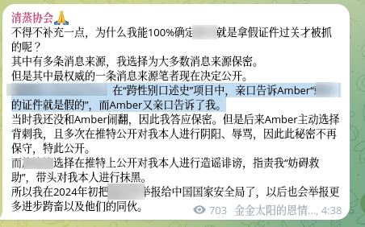

honnun
@h191980276
@sauricat 跑去清蒸升堂那就不用看谁对谁错了

Beiyan-Shu
@sauricat
胡桃夹子说口述史项目里面，amber 随意把从被访者那里听到的信息违反保密协议说给她，导致被访者被举报给国安局。我不是很相信胡桃夹子说的事情是真的，虽然 amber 在口述史期间其项目管理混乱也是事实。更应该指责的是胡桃夹子试图对跨性别社群的异见人士实行跨国镇压的行为。这条就是铁证。 https://t.co/sCx8PcU7d5